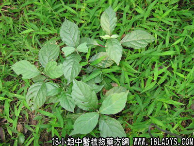

别名：土常山。
植物名：土牛膝。
生长环境：本品为一年至二年生粗壮草本，生于旷野地、路旁、耕地上。
分布：广东各地及南方各省。
入药部分：根、茎。
采集期：夏、秋。
自采地点：郊外。
性味：性凉、味甘淡。
功能：清热、利水。
主治、用量和用法：1、外感发热：干用1至2两，清水煎服；2、发冷：干用1至2两，清水煎服，发病前两小时服；3、久热不退：干用1至2两，黑枣4枚，清水煎服；4、暑热头刺：干用1至2两，清水煎服。
验方：（治疟疾方）：倒扣草2两、黑豆四十八粒、清水三碗，煎成一碗服。
方解：倒扣草治疟疾、退热、早为民间所熟用，又以其节部稍膨大如牛膝之状，故名牛膝。根据植物学界人士称：“广东产牛膝有多种。”因而将本站另记载之土牛膝混淆。倒扣草、黑豆合用以治疟疾，是取倒扣草驱少阳之邪，黑豆有补益作用，合治疟疾有效。
（方歌）治疟民间有验方，倒扣为君黑豆帮，扶正驱邪原经法，往来寒热一扫光。